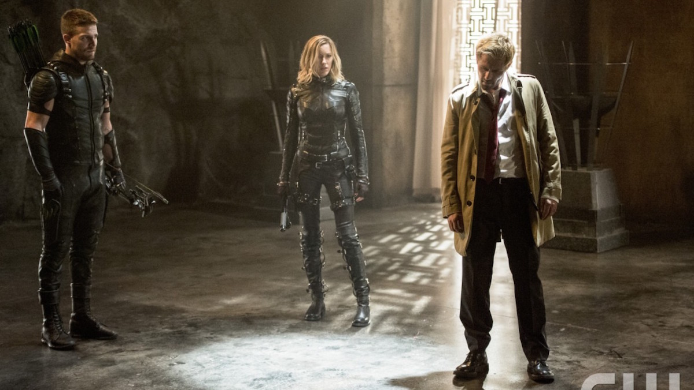

Arrow S04|E05 Haunted
The Flash/Arrow universe grew a little bigger tonight as John Constantine paid a visit to Star City and created a bridge to NBC's short-lived Constantine series. This guest appearance by the popular magical anti-hero was the perfect way to highlight Arrow's transition to the supernatural realm. Between this crossover and the fact that King Shark of all villains appeared in The Flash last week, it seems like there's quite literally no stone in the DC Universe these shows will leave unturned.
This episode introduced Constantine neatly enough for those that aren't familiar with the TV series or the other incarnations of the character. The writers didn't bother digging too much into his history of back-story. All we really needed to know is that Constantine is a magician who specializes in exorcisms and has a magical treasure hunter thing going for him. There weren't any real direct ties between this episode and the Constantine show. Ryan could just as easily have been playing a different version of the same character. Though it should be pointed out that Executive Producer Wendy Mericle did confirm to us earlier this year that this is indeed the same version of Constantine.
What surprised and disappointed me with "Haunted" was how relatively little screen time Constantine actually had. He didn't appear in the present-day section until at least the halfway mark. Prior to that, there was a little too much attention paid to the hunt for Sara. That material could easily have been trimmed down in favor up giving more room to Constantine, Ollie and Laurel's supernatural journey. Or barring that, maybe the brief team-up between Captain Lance and Diggle could have been shifted to a different episode. It was fun seeing the two infiltrating a government facility and it was certainly interesting to learn that Diggle's brother was not the shining example of military discipline he was always made out to be. It's just that this subplot didn't have much bearing on the rest of the episode.
Emily Bett Rickards and Echo Kellum have a great dynamic going as two amped-up geeks with communication problems. This episode really leaned on that element as Curtis drowned himself in energy drinks and basically transformed into the Super Saiyan version of Felicity. There was even a bit of progress with the Ray Palmer mystery, as we have definite confirmation he's alive and in imminent danger. It's just that this season is starting to repeat one of the flaws of Season 3 in that this subplot could just as easily be taking place in a different show. There's very little tying the search for Ray to anything else going on in the series. There's just something about Ray's role on this show that keeps him isolated from everyone else.
Laurel's character arc has been handled pretty poorly so far this season. Her decision to resurrect Sara reeked of selfishness, and the way she tormented her father with the act last week was even worse. As if that weren't bad enough, Laurel became responsible for the deaths of several criminals this week because her soulless zombie sister decided to go on a killing spree. No one seemed overly concerned with holding her to account for that, though it's probably safe to assume Sara herself will be dealing with the fallout of her actions in much the same way Roy and Thea have grappled with being brainwashed to kill.

Laurel needs some damage control at this point, and this episode at least tried to deliver in that regard. The biggest moment in this regard came when Laurel called out Ollie for his hypocrisy. If he made a unilateral decision to save Thea using the Lazarus Pit, how can he judge her for doing the same with Sara? She almost had a point, except that Ollie acted out of an immediate sense of desperation and in response to a ticking clock. He chose to throw his own life away rather than allow Thea to become a victim of Ra's al Ghul's cruel game. Laurel simply couldn't cope with her sister's death, and chose to ignore the advice of everyone around her in order to reverse it. But despite all this, I think Laurel did come across a little better than she has in recent weeks. If nothing else, she was willing to travel into another plane of existence and risk her own soul to save Sara. That has to count for something.
Constantine, Ollie and Laurel faced off against some demonic ninja to reclaim Sara's soul from whatever demonic entity was holding it captive. It's always amusing how Diggle is employed as the Agent Scully of Star City, completely unable to wrap his mind around the strange things he's encountering and clinging to logic and reason like a security blanket. It's just a shame this supernatural sequence ended on such an anticlimactic note. The fact that Constantine specifically mentioned that something was holding Sara's soul had me hoping for something more than a few sword-wielding goons. There's also the fact that the climax all but completely glossed over the emotional reaction to Sara's return. Given how much Captain Lance's emotional turmoil was a focus last week, you'd think his reunion with Sara would be framed as the big payoff.
The flashbacks definitely warrant some mentioning this week, as that's where Ryan had the majority of his screen time. Initially, the idea that Constantine just happened to travel to the island seemed like a forced way of injecting him into Ollie's past. But as it turned out, there's some supernatural tomfoolery afoot on Lian Yu as well as Star City. It was nice to have some real story progress this week. We don't know what Baron Reiter is up to, but it obviously involves a lot more than using slave labor to grow drugs. We also learned that Lian Yu has its own mystery hatch. That particular scene was so blatantly reminiscent of Lost I have to assume it was an intentional homage.
Similarly, the Ollie/Constantine reunion in the present (brief though it was) very much set the tone for Season 4 going forward. There's a sense that there's no going back for Team Arrow now that they've invited the supernatural into their lives. And with the revelation that Damien Darhk is a man who inspires fear even in the likes of John Constantine, this season's villain became that much more ominous and compelling. Is it too much to hope that Constantine will return to help out once again?
Next weeks episode preview: